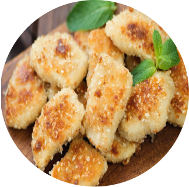

Batata de Murro
Ingredientes
- • Batatas
- • Água
- • Sal
- • Azeite
- • Pimenta do reino
Molho de castanha caju caseiro:
- • 1/2 xíc de castanha-de-caju (lembre de
deixá-las de molho antes de usar); - • 1/2 xíc de água;
- • 3 colher de (sopa) de extrato de tomate;
- • 1/2 col (sopa) de vinagre de maçã;
- • 1 dente de alho;
- • Sal a gosto;
- 1/2 col (chá) de pimenta calabresa
Modo de preparo:
Primeiramente, cozinhe as batatas em água com sal.
Depois, deixe descansar um pouco e prense com um prato
para deixá-las amassadas. Em seguida, em uma assadeira,
arrume as batatas e coloque azeite, sal e pimenta do reino.
Então, deixe no forno a 220 graus por 40 minutos. Enquanto
isso, aproveite para preparar o molho de castanha-de-caju.
Molho:
Coloque as castanhas (podem ser substituídas por iogurte,
basta diminuir a quantidade de água), água, extrato de
tomate, sal, vinagre, alho e melado. Logo após, bata essa
mistura em um mixer ou liquidificador.
Por fim, tempere as batatas com alho em pó e está pronto!
Frango Empanado Low Carb Sem
Fritar Com Salada
Ingredientes
- • 3 filés de peito de frango
- • Suco de ½ limão
- • Tempero a gosto (sal, alho)
- • Páprica doce ou picante
- • Pimenta do reino a gosto
- • Queijo mussarela light
- • Manjericão para decorar
Para o molho e para empanar:
- • 2 tomates sem sementes, picados grandes
- • ½ cebola pequena, picada
- • Sal a gosto
- • 3 dentes de alho, picados
- • Cebolinha a gosto
- • Pitada de açúcar demerara (para tirar a acidez)
- • Farinha de aveia (aproximadamente ½ xícara)
- • 2 ovos, batidos e peneirados
Modo de preparo:
Comece temperando os filés de frango com suco de limão, tempero a gosto, páprica e pimenta do reino. Deixe marinar por pelo menos 30 minutos na geladeira.Enquanto isso, prepare o molho: em uma panela, refogue a cebola e o alho em um pouco de azeite até que fiquem dourados. Adicione os tomates picados, sal, cebolinha e uma pitada de açúcar demerara para equilibrar a acidez. Cozinhe em fogo baixo por cerca de 15 minutos, mexendo ocasionalmente, até que os tomates se desmanchem e o molho esteja encorpado. Reserve.Empanar os filés de frango: passe-os na farinha de aveia, em seguida, nos ovos batidos e novamente na farinha de aveia, garantindo que estejam bem cobertos.Em uma frigideira antiaderente, aqueça um pouco de azeite e grelhe os filés empanados até que fiquem dourados e cozidos por dentro.Pré-aqueça o forno a 180°C.Transfira os filés grelhados para um refratário e cubra com o molho de tomate preparado anteriormente.Cubra cada filé com uma fatia de queijo mussarela light.Leve ao forno pré-aquecido por cerca de 10 minutos, ou até que o queijo esteja derretido e borbulhante.Retire do forno e sirva os filés de frango gratinados com manjericão fresco por cima.Acompanhe com arroz integral ou uma salada verde para uma refeição completa.
Nuggets saudável
Para empanar:
- • ½ kg de peito de frango cru cortado em pedaços
- • 4 colheres de sopa de azeite de oliva
- • ½ colher de chá de sal rosa
- • 3 dentes de alho picados
- • ½ cebola picada
- • ½ colher de chá de páprica defumada
- • ½ colher de chá de cúrcuma
- • 2 colheres de sopa de cheiro verde picado
- • Pimenta do reino a gosto
Ingredientes
- • ½ kg de peito de frango cru cortado em pedaços
- • 4 colheres de sopa de azeite de oliva
- • ½ colher de chá de sal rosa
- • 3 dentes de alho picados
- • ½ cebola picada
- • ½ colher de chá de páprica defumada
- • ½ colher de chá de cúrcuma
- • 2 colheres de sopa de cheiro verde picado
- • Pimenta do reino a gosto
Modo de preparo
Pré-aqueça o forno a 200°C e forre uma assadeira com papel manteiga.Em uma tigela grande, tempere os pedaços de frango com azeite de oliva, sal rosa, alho picado, cebola picada, páprica defumada, cúrcuma, cheiro verde e pimenta do reino. Misture bem para que todos os pedaços de frango fiquem bem temperados. Reserve.Em uma tigela separada, misture as farinhas de amaranto, linhaça dourada e amêndoas,as sementes de gergelim, a cúrcuma e o sal rosa.
Esta será a mistura para empanar os nuggets. Passe cada pedaço de frango temperado na mistura defarinha ,garantindo que todos os lados estejam bem revestidos. Coloque os nuggets empanados na assadeira preparada, deixando um espaço entre cada um. Asse no forno pré-aquecido por cerca de 20-25 minutos, ou até que os nuggets estejam dourados e cozidos por dentro. Retire do forno e deixe esfriar por alguns minutos antes de servir. Sirva os nuggets saudáveis com molho de sua preferência, como molho de iogurte ou molho barbecue caseiro.